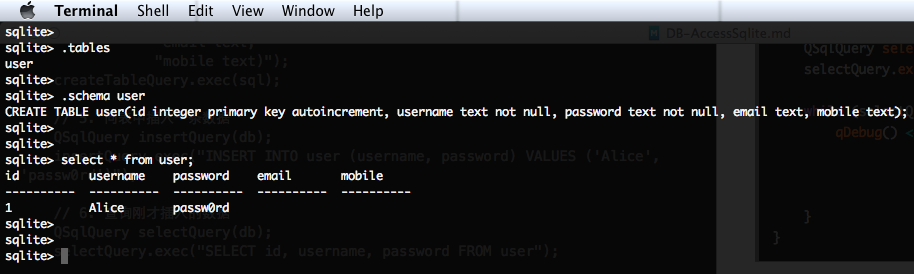

SQLite 是一个开源的嵌入式关系数据库，实现自包容、零配置、支持事务的SQL数据库引擎。 其特点是高度便携、使用方便、结构紧凑、高效、可靠。整个数据库(定义、表、索引和数据本身)都在宿主主机上存储在一个单一的文件中。SQLite 支持跨平台，同一个 SQLite 的数据库文件，可以在 Windows，Linux，Mac OS 中使用。SQLite 的使用非常广泛，例如 Firefox，Chrome，Android，iOS 等都使用了 SQLite 来存储数据。SQLite 默认不支持使用用户名密码来连接，如果我们的数据安全性要求不高，那么就可以使用 SQLite 来存储，这样做的好处是数据文件是一个单一的文件，可以和项目一起发布而不需要安装数据库软件就能拥有数据库的功能，这是多么美好的事（想像一下，如果需要模拟数据库的操作，手动用程序通过读写文件的方式向一个文件中插入，更新，删除一条记录需要付出多少的代价，而用 SQLite 的话，就是一条 SQL 语句的事情，用上 SQLite，这简直是鸟枪换炮了啊）。
Qt 默认已经提供了 SQLite 的驱动，直接在代码里就可以访问 SQLite。在 plugins/sqldrivers 目录下可以找到 SQLite 的数据库驱动插件。
Qt 访问 SQLite 的步骤:
- 加载
SQLite 驱动
- 设置
数据库文件名
- 打开数据库，也就是创建数据库连接
- 创建 query 对象，执行 SQL 语句
- 处理 query 执行得到的结果
下面演示 Qt 访问 SQLite，将
- 创建一个名为 sqlitedata.db 的数据库文件
- 在数据库里创建一个表 user
- 插入一条数据
- 查询刚才插入的数据
在 QtCreator 里创建控制台工程，然后在工程的 .pro 文件里加入 QT += sql 引入数据库模块，修改 main.cpp 为下面的内容：
1
2
3
4
5
6
7
8
9
10
11
12
13
14
15
16
17
18
19
20
21
22
23
24
25
26
27
28
29
30
31
32
33
34
35
36
37
38
39
40
41
42
43
44
45
46
47
48
49
50
51
52
53
54
55
56
57
| #include <QDebug>
#include <QSqlDatabase>
#include <QSqlQuery>
#include <QSqlError>
void accessSqlite();
int main(int argc, char *argv[]) {
Q_UNUSED(argc)
Q_UNUSED(argv)
accessSqlite();
return 0;
}
void accessSqlite() {
QSqlDatabase db = QSqlDatabase::addDatabase("QSQLITE", "Connection_Name");
db.setDatabaseName("sqlitedata.db");
if (!db.open()) {
qDebug() << "Connect to Sqlite error: " << db.lastError().text();
exit(128);
}
QSqlQuery createTableQuery(db);
QString sql("CREATE TABLE user("
"id integer primary key autoincrement, "
"username text not null, "
"password text not null, "
"email text, "
"mobile text)");
createTableQuery.exec(sql);
qDebug() << "Create table error: " << createTableQuery.lastError().text();
QSqlQuery insertQuery(db);
insertQuery.exec("INSERT INTO user (username, password) VALUES ('Alice', 'passw0rd')");
QSqlQuery selectQuery(db);
selectQuery.exec("SELECT id, username, password FROM user");
while (selectQuery.next()) {
qDebug() << QString("Id: %1, Username: %2, Password: %3")
.arg(selectQuery.value("id").toInt())
.arg(selectQuery.value("username").toString())
.arg(selectQuery.value("password").toString());
}
}
|
编译、运行、程序输出：
“Id: 1, Username: Alice, Password: passw0rd”
输出了我们刚刚插入的数据，和我们预料的一样。
在程序的工作目录里（编译出来的可执行文件所在目录）有一个名为 sqlitedata.db 的文件。这是因为 db.setDatabaseName(“sqlitedata.db”) 设置了要访问的 SQLite 的数据库文件名，访问时如果发现没有这个文件，Qt 会为我们创建，如果这个文件已经存在，就继续使用它。使用 SQLite 的工具，查看一下 sqlitedata.db 的结构与数据：

可以看到有一个 user 表，其创建语句正是我们的程序里的建表语句
1
2
3
4
5
6
7
| CREATE TABLE user(
id integer primary key autoincrement,
username text not null,
password text not null,
email text,
mobile text
)
|
再次运行上面的程序，这次输出：
Create table error: “table user already exists Unable to execute statement”
“Id: 1, Username: Alice, Password: passw0rd”
“Id: 2, Username: Alice, Password: passw0rd”
这次访问 sqlitedata.db 时，发现它已经存在，所以就直接使用它了，而不是重新创建，创建表虽然失败了，但是不影响程序往下执行，由于再次插入了 1 条记录，所以访问时输出 2 条记录。
思考
Qt 访问不同的数据库，只是在创建数据库连接时有细微的区别，其他部分的代码都是一样的。这里我们只是展示了怎么去访问 SQLite，但存在很多问题，一点都不实用，更谈不上结构优良，可复用等，如果在工作中把这样的代码写到工程里，离被老板请去喝茶的时间也不远了。但不幸的是，这样的代码大量存在于初学者，甚至有一定工作经验的开发者之中。
后面的章节我们会逐步分析，优化，让其可用于实际项目，最后我们访问数据库的代码可以像下面这样优雅（SqlUtil, DaoTemplate 中的代码都不需要修改）：
1
2
3
4
5
6
7
8
9
10
11
12
13
14
15
16
17
18
19
20
21
22
23
24
25
26
27
28
29
30
31
| int UserDao::selectUserById(int id, User *user) {
QString sql = SqlUtil::getInstance().getSql(SQL_NAMESPACE_USER, "selectUserById").arg(id);
return DaoTemplate::selectBean(user, sql, mapRow);
}
int UserDao::selectAllUsers(QList<User*> *users) {
QString sql = SqlUtil::getInstance().getSql(SQL_NAMESPACE_USER, "selectAllUsers");
return DaoTemplate::selectBeans(users, sql, mapRow);
}
int UserDao::insert(const User &user, int *primaryKey) {
QString sql = SqlUtil::getInstance().getSql(SQL_NAMESPACE_USER, "insert");
QMap<QString, QVariant> params;
params["username"] = user.username;
params["password"] = user.password;
return DaoTemplate::insert(sql, params, primaryKey);
}
int UserDao::update(const User &user) {
QString sql = SqlUtil::getInstance().getSql(SQL_NAMESPACE_USER, "update");
QMap<QString, QVariant> params;
params["id"] = user.id;
params["username"] = user.username;
params["password"] = user.password;
return DaoTemplate::update(sql, params);
}
|
可以自己先思考一下，怎么才能实现像上面这样访问数据库？